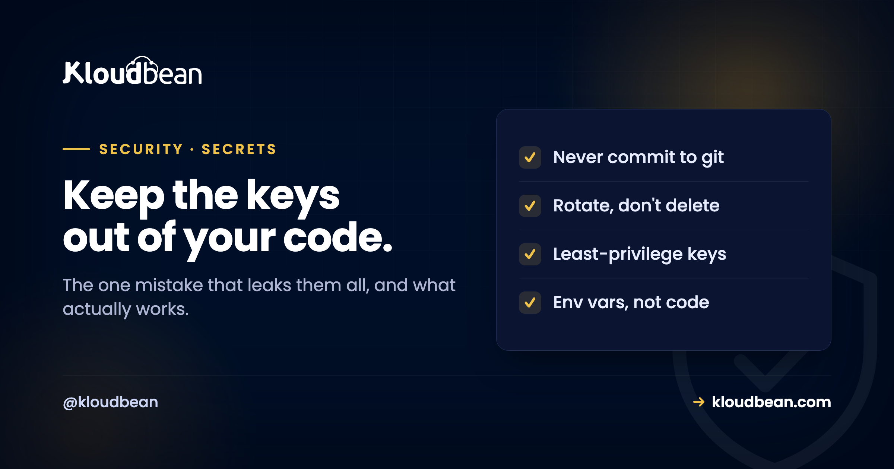

Secrets Management: The One Mistake That Leaks Them All

Every real application is full of secrets: the database password, the API keys for payments and email, the tokens that let services talk to each other. They are, quite literally, the keys to your system, and yet they are among the most casually mishandled things in software. The single most common way they leak is also the most avoidable, a secret committed to a git repository, and the follow-up mistake, quietly deleting that commit and assuming the problem is gone, is what turns a slip into a breach. Handling secrets well is not complicated, but it does require a few firm habits. This is the short list that keeps the keys to your kingdom out of the wrong hands.
Keep secrets out of your code entirely. Application secrets like database credentials and API keys belong in environment variables set on the server, not in files you commit; human secrets and shared passwords belong in a password manager or vault. Never commit a secret to git, because the history is permanent and bots scan public repositories for keys within seconds. If a secret is ever exposed, deleting the commit is not enough: you must rotate it, meaning generate a new one and revoke the old. Scope each key to the least it needs, and rotate on a schedule and whenever someone leaves. On Kloudbean you set environment variables in the console rather than in code, and issue scoped personal API tokens you can revoke.
What actually counts as a secret
First, be clear about what you are protecting, because the line is not always obvious.
A secret is anything that grants access or proves identity: database usernames and passwords, API keys for third-party services, access and refresh tokens, signing keys and encryption keys, SMTP credentials, webhook signing secrets, and private certificates. If knowing it lets someone act as you or reach your data, it is a secret. What is not a secret is ordinary configuration: a public API endpoint, a feature flag, the site's own public URL. The distinction matters because the two get handled very differently, and the classic error is treating a secret like config, dropping it into a file that ends up in version control or, worse, shipped to the browser. When in doubt, treat it as a secret; the cost of over-protecting a config value is nothing, and the cost of under-protecting a real key can be your whole system.
The number-one leak: a secret in git
If there is one habit to build, it is this: no secret ever goes into a git repository. Not even briefly, not even in a private repo.
Here is the part that catches people, and it is worth stating bluntly. Committing a secret and then deleting it in a later commit does not remove it. Git keeps history, so the secret still sits in a previous commit that anyone with the repository can read, and rewriting history is painful and often incomplete. Worse, for public repositories the window is brutal: automated bots continuously scan new commits on the internet for anything that looks like an API key, and they can find and start abusing a leaked key within seconds of the push, long before you notice. People have run up enormous cloud bills from a key that was live in a public repo for minutes. So the mechanism to internalise is that a committed secret is a disclosed secret, permanently, whether or not you later delete it.
Which leads to the rule that surprises people most: if a secret has been exposed, the only real fix is to rotate it. Generate a new key, update where it is used, and revoke the old one so the leaked value is worthless. Deleting the commit, making the repo private, or scrubbing history are all secondary; until you rotate, the exposed secret is still a valid key someone else may hold. Treat any exposure as "assume it is compromised, rotate now," not "delete it and hope."
.env) to .gitignore so they cannot be committed by accident, and consider a pre-commit secret scanner that refuses commits containing key-shaped strings. The cheapest leak to fix is the one that never happens.
Where secrets should live instead
If not in code, then where? There are two homes, one for machines and one for humans.
Application secrets go in environment variables. Your app reads its database URL, API keys, and tokens from the environment at runtime, and those values are set on the server, not written into the codebase. This is the standard pattern, and the mechanics, including the trap of build-time versus runtime variables and the danger of leaking a secret into the client bundle, are covered in environment variables done right. The one rule to carry from there: a secret in your frontend JavaScript bundle is public the moment you ship it, because anyone can read the code the browser downloads. Secrets belong on the server side only.
Where you set those values decides how often you'll actually change them. If the only path to an env var is SSH into a box and edit a file, half your team won't have access and nobody will touch it under pressure. On Kloudbean the app's environment variables and the Node or Python runtime config are fields in the console, no shell needed, so replacing a leaked key is a config change on a running app rather than a commit, a rebuild, and a prayer. That's a small detail with a big downstream effect, which the rotation section below leans on hard.
Human and shared secrets go in a vault or password manager. The credentials people handle, shared logins, recovery codes, the master API keys you copy into env vars, should live in a proper password manager rather than a spreadsheet, a chat message, or a sticky note. A self-hosted option like Vaultwarden keeps that vault on infrastructure you control, with the zero-knowledge encryption a password manager provides. The principle for both homes is the same: secrets live in a system designed to hold them, never scattered through code, tickets, and DMs where they get copied, forgotten, and eventually leaked.
Least privilege and rotation
Two disciplines turn "we store secrets in the right place" into "a leaked secret does limited damage." Both are about shrinking blast radius.
Least privilege means each key can do only what it actually needs. If a service just reads from one bucket, its key should not be able to delete your whole account. Prefer scoped tokens over all-powerful ones, issue a separate credential per service rather than sharing one everywhere, and you contain the damage when, not if, one leaks. Apply the same rule to your infrastructure account, not only your app: Kloudbean issues scoped personal API tokens for the Platform API and lets you create subusers with per-resource, per-action permissions, so your CI job or your junior dev holds a credential that can do one job instead of everything. A single master credential shared by three scripts is the version of this everyone regrets later. Rotation means secrets are not forever. Rotate them on a schedule, and rotate immediately on any trigger: a suspected exposure, a laptop lost, or a team member leaving, since offboarding without rotating shared secrets leaves a door open behind them. The practical enabler for both is that your secrets must be easy to change. If rotating a key means hunting through code and redeploying by hand, you will avoid doing it; if it means updating one environment variable, you will actually rotate when you should. Build for rotation and you will use it.
The cheapest setup that actually holds
You don't need a secrets platform, a KMS, or a dedicated engineer to be in decent shape. Five things, in order of how much they save you per hour spent:
.envin.gitignore, plus a pre-commit scanner. Free, and it kills the failure mode that causes most real leaks. Do this one first even if you do nothing else.- Every application secret read from the environment. No credentials in code, no credentials in a committed config file. Set them wherever your host lets you set them without a shell, so the person on call can change one at 2am.
- One credential per service, scoped to its job. Separate database users, separate API keys, separate platform tokens. This is what turns a leak into an incident instead of a catastrophe.
- A vault for the human half. Shared logins and recovery codes in a password manager. A self-hosted Vaultwarden works if you'd rather the vault sit on your own server.
- A written rotation trigger list. Four lines in your README: suspected leak, lost device, someone leaves, and every N months. Undocumented rotation never happens.
Now the part no host solves, ours included. Nothing in a hosting platform can stop you pasting a live key into a commit, or notice that the token you generated has far more power than the script needs, or rotate a credential you never wrote down. There's no setting for that. What a platform can do is remove the friction that makes people skip the right thing: console-set environment variables so secrets never need to live in a file, revocable scoped tokens instead of one master key, subusers with granular permissions, and somewhere to run your own vault. Tooling is the easy half. The habits are the work, and they stay yours. Broader division of what the platform covers versus what you own is in the secure and compliant hosting guide.
Beyond secrets Management
The mechanics of putting secrets in the environment, and the build-time trap, are in environment variables done right. For a vault to hold human secrets, self-hosting Vaultwarden. Strengthen the logins those secrets protect with two-factor and social login, and restrict who can reach sensitive endpoints with IP allowlisting. The overview is secure and compliant hosting.
Keep your keys out of your code.
Kloudbean lets you set environment variables in the console instead of committing them, and issue scoped personal API tokens you can revoke, so rotation is a one-field change and a leaked key does limited harm. Run a Vaultwarden for the human side too. Weigh them in Kloudbean vs Cloudways, then try it at kloudbean.com.
Environment variables in the console · Scoped API tokens · Self-hostable vault · One dashboard
FAQ
What counts as a secret?
Anything that grants access or proves identity: database credentials, API keys, access and refresh tokens, signing and encryption keys, SMTP credentials, webhook signing secrets, and private certificates. If knowing it lets someone act as you or reach your data, treat it as a secret. Ordinary configuration like a public endpoint or a feature flag is not a secret, but when you are unsure, err toward protecting it, because over-protecting config costs nothing.
I committed an API key to git and deleted it. Am I safe?
No. Git keeps history, so the key still exists in an earlier commit that anyone with the repository can read, and if the repo was public, automated scanners may have grabbed it within seconds of the push. Deleting the later commit does not undo the exposure. The only reliable fix is to rotate the key: generate a new one, update where it is used, and revoke the old one so the leaked value stops working.
Where should I store application secrets?
In environment variables set on the server, read by your app at runtime, rather than in files you commit to your codebase. This keeps them out of version control and makes them easy to change, which is what makes rotation practical. Never place a secret in your frontend JavaScript, because anything shipped to the browser is readable by anyone. Secrets belong on the server side only.
What is secret rotation and when should I do it?
Rotation means replacing a secret with a new value and revoking the old one, so a previously valid key becomes useless. Do it on a regular schedule, and immediately whenever there is a trigger: a suspected leak, a lost device, or a team member leaving. Rotation is only sustainable if changing a secret is easy, which is a strong reason to keep secrets in environment variables or a vault rather than scattered through code.
What does least privilege mean for API keys?
It means each key can do only what that specific use actually requires, rather than holding full account power. Use scoped tokens limited to the needed permissions, and issue a separate credential per service instead of sharing one everywhere. Then when a key leaks, the damage is contained to what that key could do, rather than exposing your entire system through one over-powerful credential.
Is it safe to keep secrets in a private git repository?
It is safer than a public repo, but still not a good practice. Private repositories can be cloned by many people, made public by mistake, or exposed if the hosting account is compromised, and the secret remains permanently in history either way. Keeping secrets out of git entirely, in environment variables and a vault, avoids all of that. Treat "private repo" as reducing risk, not removing it.
Where should shared team passwords live?
In a password manager or vault built for the job, never in spreadsheets, chat messages, or documents where they get copied and forgotten. A vault gives you encrypted storage, controlled sharing, and a single place to rotate a shared credential. A self-hosted option like Vaultwarden keeps that vault on infrastructure you control, which some teams prefer for their most sensitive credentials.
How does Kloudbean help with secrets?
You set environment variables in the console rather than committing them to code, so application secrets stay on the server and are easy to update, which makes rotation a quick change. For platform automation you issue scoped personal API tokens that can be revoked, applying least privilege to your own tooling. You can also run a self-hosted Vaultwarden for human and shared secrets. The mechanisms are provided; the habits of not committing secrets and rotating them stay with you.